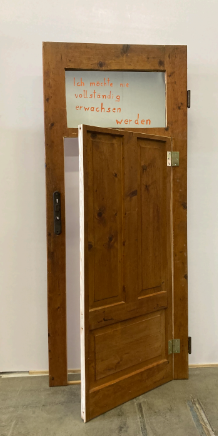

,,...aus den Angeln"
Exponate der Ausstellung im Landhaus Bregenz
Zugunsten der Initiative SPIELLERNRAUM
mit Versteigerung am 28. November 2025 um 18.00 Uhr
Roland Adlassnigg
„Ich möchte nie vollständig erwachsen werden"
Ingrind Delacher
„Gänseblümchen“

Die beiden Türseiten sind als Holzschnitttafeln bearbeitet – die weiße und die braune Seite als Yin- und Yang-Symbol stehen für die Licht- und Schattenseiten des Lebens. Sie können mit Reinheit, Unschuld, Neuanfängen und Liebe in Verbindung gebracht werden. Auch Kindheit, Bescheidenheit und Freude kann assoziiert werden.
Ruth Gschwendtner-Wölfle
„2 Flügeltüren mit Startrampe“

Die zwei Türflügel sind beidseitig bearbeitet: Blau-Weiss-Schattierungen verweisen auf Himmel, Raum, Offenheit. Oben die deutsche Übersetzung des umseitig geschriebenen tibetischen Textes - Zitat des Buddha, der an 9 Beispielen die Vergänglichkeit beschreibt, die, wie alle zusammengesetzten Phänomene, veränderlich sind, und zwar in jedem Augenblick, er wird mit dem „64tel eines Fingerschnalzens“ definiert. Dieser alte Text verbirgt sich jeweils auf der Rückseite unter einer transparenten Stoffbahn, die sich leicht über den Türtext spannt und mit Wolken und schwach sichtbaren Bergen bedruckt ist. Der tibetisch geschriebene Text ist nur vage zu erkennen.


Der Zugang zur Weisheit liegt hinter Wolken und Bergen. Wer die blattvergoldete Klinke aktiv in die Hand nimmt, der öffnet sich eine neue Welt. Der erste Schritt ist, den Wunsch zu entwickeln. Nur wem die Schuhe zu schwer sind, wird sich aus ihnen lösen wollen, die Startrampe betreten, und eine Wandlung wagen… Therapie braucht diesen Wunsch, braucht Mut, Entschlossenheit und Zeit, Schweres, Leidvolles loszulassen und eine neue leichte Dimension zu betreten. Möge die Übung gelingen!
Peter Langebner
„Im Rahmen der Türe“
| Tür1 | Die innere Tür – Innere Türen sind für die Äußeren zu öffnen |
| Tür2 | Die Tür zum Horizont |
| Tür3 | Der Blick zum Horizont ist die Fähigkeit, durch Türen hindurch zu sehen |

Arbeitstitel: Türen sind zum aufmachen oder zumachen oder zu lassen oder offen sein Türen entscheiden nicht Technik: Lack gesprayt
Georg Vith
„Camera Lucida“

Klara Vith
„WC Tür“

Die ehemalige WC-Tür wird zum Träger neuer Aluminiumschilder mit Aufschriften wie ‚drücken‘, ‚klopfen‘, ‚eintreten‘ oder ‚aufbrechen‘. Die Tür wird so von einem funktionalen Objekt zu einer Metapher für Schwellen, Gewalt und Möglichkeiten des Zugangs.
WolfGeorg
| Tür1 | „Den Mond anheulen oder nach den Sternen greifen“ |
| Tür2 | „Alles ist möglich“ |

Tür 1
Auf der Vorderseite der Gartentür sitzt ein Wolf und heult den Mond an. Auf der Rückseite sind viele vergoldete Sterne zu sehen, die um die Wette funkeln. Es soll ausdrücken, dass man sehr unterschiedlich mit einer Situation umgehen kann.

Tür 2
Auf der Vorderseite ist der untere Teil der Türe durchbrochen und es kommt ein Wolf heraus ( im Winkel von 80Grad). Oben durchbohren 2 Vögel die Tür. Von einem sieht man nur das Vorderteil, vom anderen das Hinterteil. Auf der Rückseite umgekehrt. Es soll ausdrücken, dass nichts so ist wie es scheint, dass viel mehr möglich ist, als man denkt.